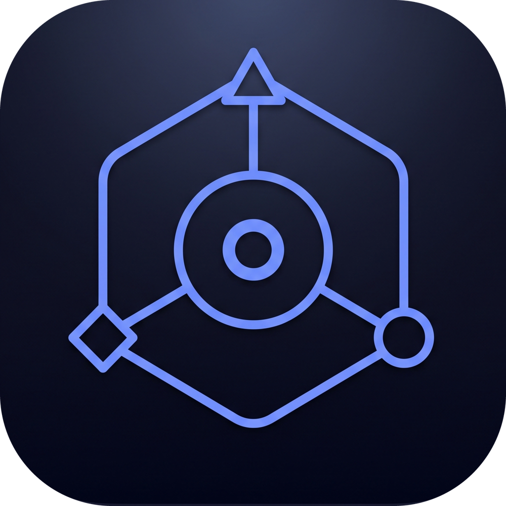

The dock row turns amber first (0.1 s): Claude asks to edit main.py, models.py, service.py and … The statement enters word by word on the VO; "Where?" holds alone. No music, no logo.
Real: Agents dock page (flow-agent dockPage.ts), scripted session.
hard cutA tick per path as it lands. The camera drifts down the list and it loses focus. At 11 s the paths fold away and the canvas comes in.
Real command output: git diff --stat of the film's commit (14 files, +112 −16).
cut on the downbeat
The canvas fades up on the downbeat, already moving: a slow push from the change set's root ("14 changed files · 9 endpoints", "Affects 9 endpoints") across the tables the change touches, then down to the green and red cards.
Real: the canvas (ui/) showing the 14-file change set, flow-view's own changeSet code.
push in → 04
The camera keeps moving down the order flow: applyDiscount in green, then BillingClient's red and green lines with the "+ create_invoice" link into the Python service, then announce's "+ onOrderPlaced" Kafka link. A ring follows each link as the VO names it.
Real: POST /orders flow after the change.
tour starts in place
The ghost cursor glides first; the camera follows with a slight lag. The tour's own caption ("Agent edit: 2 lines added, 1 removed"), its step bar (1 / 3) and the dimmed cards around the lit one.
Real: the canvas's own "Review 3 changes" tour (ui/src/tour). In the build: the ask-and-answer tour from the point-and-ask box.
window recedes

A: the dock slides in and its row turns amber "Needs you"; push in on the APPROVAL line. B (50 s): the window darkens and the status island drops from the top edge.
Real: dock page and the island page cut from flow-desktop.patch, fed the playground's scripted session.
cut on the downbeat reference · recapture on Harbor Goods
reference · recapture on Harbor Goods
Edges draw one by one. Sequence of POST /orders, then the ER of orders, discount_codes and shipments.
Real board (docs/media/boards), shown as a reference; the build captures the board of Harbor Goods.
hard cutcapture pending
capture pending
capture pending
Three hard cuts, one per downbeat, each a push-in on one control. Captures pending: the web workbench comes up in the light default when driven headless here (the Insilode Dark theme does not load), which is being fixed before capture.
Will be real: workbench in web mode on Harbor Goods.
cut back to the 03 framing
Nothing moves. The 03 canvas, wide, every changed card in view; the line lands at lower left. Callback to 03.
Real: the same change-set canvas.
continuous

The canvas keeps drifting behind; the mark lands at 74.0 on a low hit, then the download line and the URL. Name, tagline, download line and URL come from brand.json.
Real: the canvas behind; the logo from editor/branding.
end